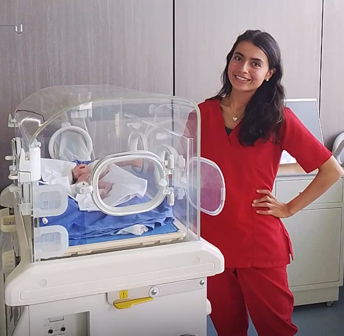

Neurodesarrollo neonatal
Participación en seguimiento de bebés prematuros y aplicación formativa de EAD-3 y AIMS.
Fisioterapeuta titulada · Tarjeta profesional
Atención neonatal, desarrollo infantil e investigación
Formación clínica e investigativa para acompañar el neurodesarrollo de bebés prematuros y la estimulación temprana.
Experiencia formativa en Programa Madre Canguro, neurorrehabilitación pediátrica, atención asistencial y proyectos de primera infancia.

Vocación de cuidado
Su proyección profesional une el cuidado de la primera infancia con un interés futuro en la salud del suelo pélvico femenino.
Perfil profesional
Combina formación clínica, vocación investigativa y trato cercano. Su recorrido conecta el seguimiento del desarrollo infantil, la atención interdisciplinaria y la educación a cuidadores.
Participación en seguimiento de bebés prematuros y aplicación formativa de EAD-3 y AIMS.
Estrategias sensoriomotoras, intervención pediátrica y educación a cuidadores.
Experiencia formativa en rehabilitación, consulta externa, hospitalización y urgencias.
Gestión de bases de datos, análisis de información y proyectos de primera infancia.
Trayectoria seleccionada
Prácticas y proyectos universitarios desarrollados en contextos reales de atención, rehabilitación y primera infancia.
Proyectos sobre primera infancia y neurodesarrollo de bebés prematuros; gestión de datos clínicos y participación en aplicación de EAD-3 y AIMS.
Apoyo al proceso interdisciplinario de rehabilitación, consulta externa y terapia física y respiratoria en hospitalización y urgencias.
Apoyo en PediaSuit, terapia Vojta y planes de tratamiento, además de talleres de autocuidado para cuidadores primarios.
Estrategias sensoriomotoras, entrenamiento a padres, apoyo en evaluaciones TIMPSI y seguimiento domiciliario de neonatos.
Actividades lúdicoeducativas de promoción y prevención para pacientes y familias en salas de espera.
Dirección profesional
Busca integrarse presencialmente a equipos pediátricos, neonatales o de investigación en Chía y su entorno.
Interés en profundizar mediante formación certificada para fortalecer la valoración neurológica temprana.
Proyección hacia la valoración y el fortalecimiento del suelo pélvico, con especial interés en mujeres gestantes.
Formación
Universidad de La Sabana
Título y tarjeta profesional obtenidos.
Morfofisiología, desarrollo motor, evaluación y diagnóstico e investigación.
Logros y liderazgo
Semillerista y auxiliar en Hospital-Hogar I y II, Proyecto 360 y Programa Madre Canguro.
Opción de grado: revisión sistemática sobre hidroterapia en niños con parálisis cerebral.
Primer puesto obtenido en la edición de 2025.
Formación en tres módulos y acompañamiento académico a estudiantes de distintas promociones.
Olimpiadas académicas nacionales de fisioterapia.
Reconocimiento por la gestión de la iniciativa para ubicar la biblioteca en el Colegio Bojacá.
Evidencias
Una selección de experiencias académicas y prácticas relacionadas con primera infancia y divulgación.



Contacto profesional
Interesada en procesos de selección presenciales en Chía y oportunidades relacionadas con atención neonatal, pediátrica o investigación.
Consultar hoja de vida completaChía, Cundinamarca, Colombia · Modalidad presencial